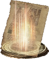
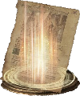
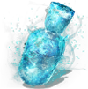

Magic

 

Magic Overview
Like most fantasy role-playing games, Dark Souls 3 boasts its own unique system of magic. There are three main schools of magic in Dark Souls 3 which provide both offensive and utility spells:
Spells can range from simple damaging projectiles to heals to weapon buffs to character buffs and many more. Check out the description of each one you find to figure out what it does and which school of magic it belongs to.
Attunement and Attunement Slots
To attune a spell, you must rest at any bonfire and select "Attune Spell" from the menu. From there you can select from the attunement slots you have, and then select a spell from your inventory to place in that slot. Once the spell is attuned, you can cast it by using a light attack with the appropriate casting tool.
Tips:
- Some spells require 2 attunement slots.
-
You can increase your number of available attunement slots by leveling up the Attunement stat at the Firekeeper.
You will gain an extra slot at levels:
- 10
- 14
- 18
- 24
- 30
- 40
- 50
- 60
- 70
- 80
- 99
- Increasing your Attunement stat will also increase your maximum Focus Points, allowing you to cast more spells before you have to drink from the Ashen Estus Flask.
- Additional attunement slots can also be gained by wearing certain rings.
Ashen Estus Flasks
Casting a spell consumes both stamina and Focus Points, so be sure to allot some of your Estus into the Ashen Estus Flask if you are planning on using spells.
 Previous Page Next Page